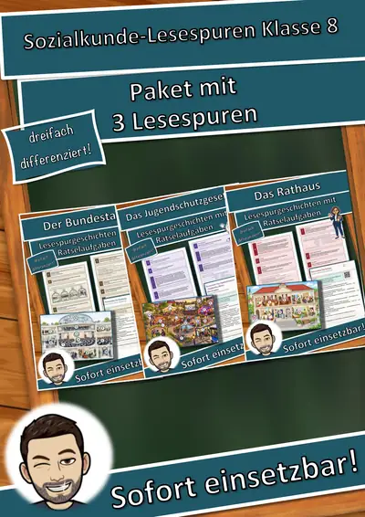

Lesespur: Das Jugendschutzgesetz: Ausgehzeiten, Alkohol, Altersfreigaben – Lesespurgeschichte mit Rätseln (Klasse 8)

Lesespur: Der Equal Pay Day: warum Frauen weniger verdienen – Lesespurgeschichte mit Rätseln (Klasse 9)

Lesespur: Der Tag der Menschenrechte: Rechte für alle Menschen – Lesespurgeschichte mit Rätseln (Klasse 10)

Lesespur: Kinderrechte bei uns: wer sie schützt – Lesespurgeschichte mit Rätseln (Klasse 10)
